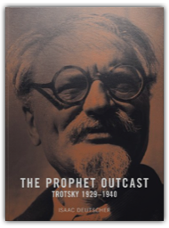
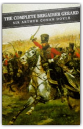
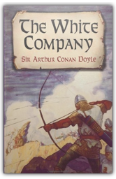
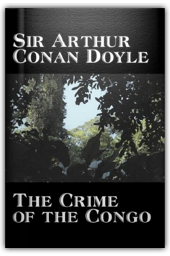
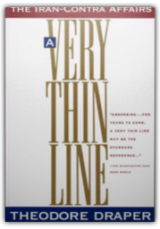
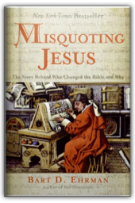

|
The Strange Death of Liberal England
George Dangerfield

At the beginning of the twentieth century England’s empire spanned the globe, its economy was strong, and its political system seemed immune to the ills that inflicted so many other countries. After a resounding electoral triumph in 1906, the Liberals formed the government of the most powerful nation on earth, yet within a few years the House of Lords lost its absolute veto over legislation, the Home Rule crisis brought Ireland to the brink of civil war and led to an army mutiny, the campaign for woman’s suffrage created widespread civil disorder and discredited the legal and penal systems, and an unprecedented wave of strikes swept the land.
Breaking the Spell: Religion as a Natural Phenomenon
Daniel C. Dennett
An innovative thinker tackles the controversial question of why we believe in God and how religion shapes our lives and our future

The Prophet Outcast: Trotsky 1929-1940
Isaac Deutscher
This third volume of the trilogy is a self-contained narrative of Trotsky's years in exile and of his murder in Mexico in 1940.
The Brothers Karamazov
Fyodor Dostoevsky
The award-winning translation of Dostoevsky's last and greatest novel.

Complete Brigadier Gerard
Sir Arthur Conan Doyle
Sir Arthur Conan Doyle's reputation has been swallowed by that of his domineering offspring Sherlock Holmes. But, in one of the finest series of historical short stories in literature, Doyle created Brigadier Etienne Gerard, a marvelous hero set against a backdrop of the Europe of Napoleon.

The White Company
Sir Arthur Conan Doyle
This spirited account of the exploits of a crew of Saxon archers during the Hundred Years War features cameo appearances by historical figures such as Edward III and the Black Prince. Flavorful and realistic in its depictions of medieval life, the novel combines the excitement of a rugged adventure with the romance of chivalry.

The Crime of the Congo
Sir Arthur Conan Doyle
Sir Arthur Conan Doyle wrote many more novels, stories, and works of nonfiction than the immortal tales of Sherlock Holmes. His interests, also, were broad-ranging. Conan Doyle became outraged upon learning of the abuses of human life that were committed as a result of Belgian King Leopold II's efforts to conquer and strip the Congo of its natural resources. In little more than a week in 1909, he documented the human rights abuses in The Crime of the Congo. Two of the reformers who led the effort to stop the carnage in Africa were Edmund Dene Morel and Roger Casement, upon whom Conan Doyle based the characters of Edward Malone and Lord John Roxton in The Lost World. Although these two were later discredited, and Conan Doyle repudiated them, his involvement with the tragedy of the Belgian Congo not only influenced The Crime of the Congo, but also his classic, The Lost World.

A Very Thin Line: The Iran-Contra Affairs
Theodore Draper
Despite the publicity given to the Iran-Contra Affair, most of the story has never been told—until now. This fully documented, often bizarre tale of sheer incompetence and conspiratorial malfeasance affords insights into how the government actually works for.
The Name of the Rose: including the Author's Postscript
Umberto Eco
“A brilliantly conceived adventure into another time” (San Francisco Chronicle) by critically acclaimed author Umberto Eco.
Destiny
David Edgar
The production of this play established David Edgar as a major playwright, one of the most important of the young generation of dramatists to emerge out of the 'portable' theatre movement of the late sixties.

Misquoting Jesus: The Story Behind Who Changed the Bible and Why
Bart D. Ehrman
When world-class biblical scholar Bart Ehrman first began to study the texts of the Bible in their original languages he was startled to discover the multitude of mistakes and intentional alterations that had been made by earlier translators. In Misquoting Jesus, Ehrman tells the story behind the mistakes and changes that ancient scribes made to the New Testament and shows the great impact they had upon the Bible we use today. He frames his account with personal reflections on how his study of the Greek manuscripts made him abandon his once ultraconservative views of the Bible. |
 Made with Delicious Library
Made with Delicious Library
Springfield, VA zipflap congrotus delicious library Fogus, Michael